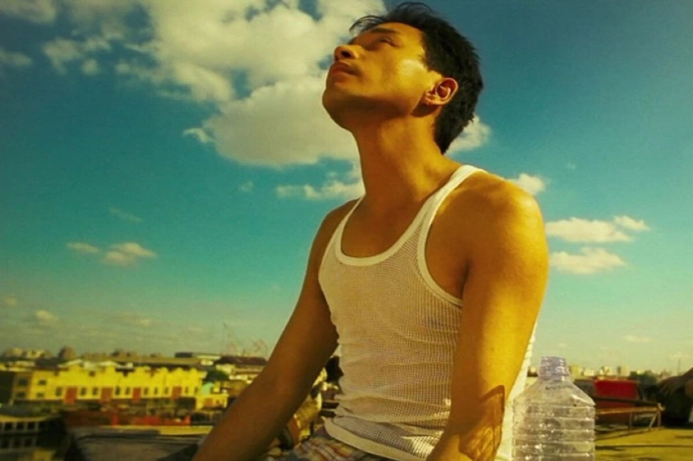

张 国 荣
娱乐圈中人士心中的“哥哥”

张国荣，1956年9月12日生于香港，歌手、演员、音乐人；影视歌多栖发展的代表之一。
他的演艺经历:
- 1977年，他获得《华侨日报》最有前途新人奖；同年加入丽的电视。
- 1980年，凭借电视短剧《我家的女人》获得英联邦电影电视节最佳表演奖；同年主演的电视剧《浮生六劫》在新加坡播出，收视率不俗。
- 1982年，主演谭家明执导的电影《烈火青春》，获得第2届香港电影金像奖最佳男主角提名，这部电影是香港新浪潮电影的代表作以及金像奖协会评选的“百年百部最佳华语片”之一。
- 1994年，凭借在电影《霸王别姬》里的表演，张国荣获得“日本影评人大奖最佳外语片男主角奖”、“中国电影表演艺术学会特别贡献奖”、“东京电影评论家大奖最佳男主角”、 第46届戛纳国际电影节最佳男演员提名。
- 1994年，他主演的电影《金枝玉叶》成为当年香港电影暑假档票房冠军；同年他主演了王家卫导演的经典武侠电影《东邪西毒》，张国荣的表演风格不仅自然细腻，而且成功诠释了欧阳锋的多重性格。香港电影评论学会评价“张国荣是一位在华人演艺圈中罕见的能将反讽诠释得很好的演员” 。凭借在此片的表演，他获得1994年香港电影评论学会大奖最佳男主角奖。
- 1995年，张国荣宣布复出歌坛并签约滚石唱片公司；复出后的他宣布不再领取任何竞争性质的奖项。 1995年他推出了专辑《宠爱》，全亚洲年度销量突破200万张， 香港本地销量达到六白金， 位居IFPI香港分会公布的全年唱片销量榜榜首，被媒体称为“救市之作”。
- 2000年，他在日本举办10场巡回演唱会，创下香港歌手在日本开演唱会的场次纪录。
- 2003年，韩国电影频道OCN联同21家韩国电影网站合作举办“百大影星”评选，张国荣排海外影星第一位。
- 2005年，新加坡《联合早报》举办“亚洲明星人气50强”评选，张国荣位居第四位，这是香港艺人截止2005年的最佳名次。
- 2007年，张国荣主演的《霸王别姬》在日本横滨的艺术展被列入中日交流年官方活动。
- 2009年，韩国举办“张国荣电影节”，用为期一月的时间上映张国荣的经典影片，这是韩国首次为怀念特定明星而举办电影节。
- 2012年，韩国流行音乐颁奖礼Mnet亚洲音乐大奖在颁奖礼开场播放张国荣的告别演唱会片段，并由韩国艺人宋仲基演唱张国荣的经典歌曲《当年情》致敬。